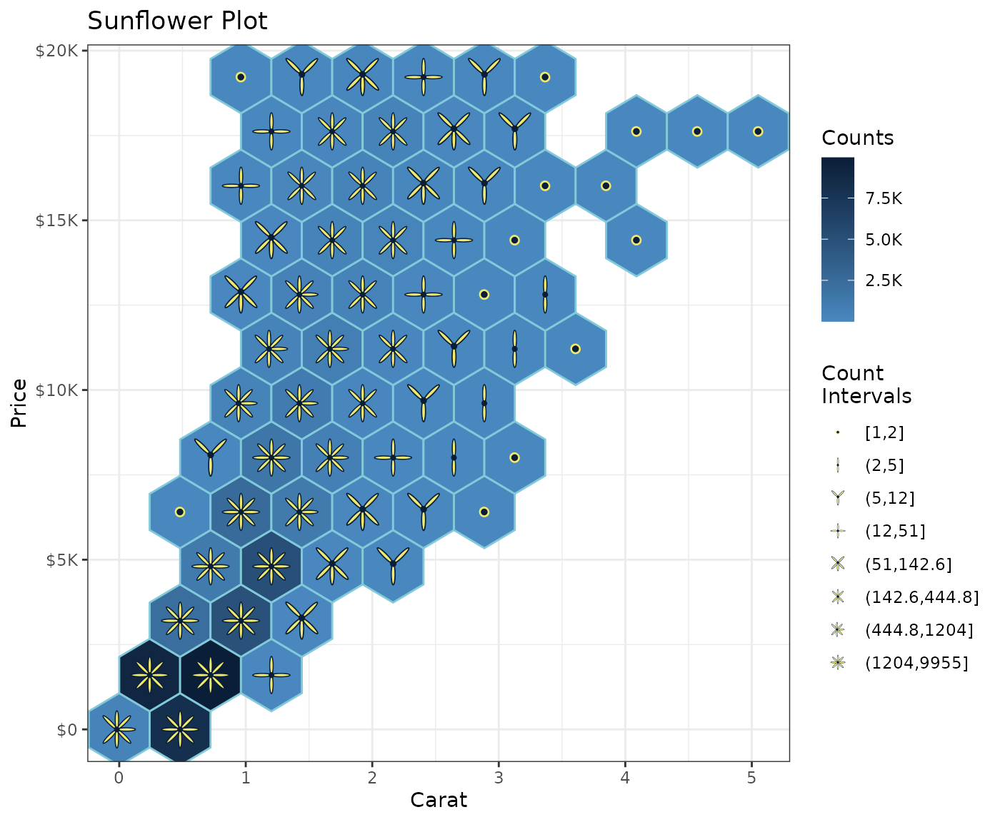

library(tibble)
library(forcats)
library(stringr)
suppressPackageStartupMessages(library(dplyr))
library(paletteer)
library(scales)
library(palmerpenguins)Exhibit a palette
A large collection of palettes are brought together under a single interface by the paletteer package. It’s used here to load the Van Gogh palette “Starry Night”.
As also rendered in this blog post, a
ggfoundry container-set shape may then be used by
geom_casting() to display the loaded palette (optionally
with associated hex codes).
n <- 5
palette <- "vangogh::StarryNight"
cols <- paletteer_d(palette, n = n)
tibble(x = 1:n, y = 1) |>
ggplot(aes(x, y, fill = fct_inorder(cols))) +
geom_casting(shape = "tube", size = 1.1) +
geom_label(aes(label = cols |> str_remove("FF$")),
size = 3, vjust = 1.6, fill = "white") +
annotate(
"text",
x = (n + 1) / 2, y = 2,
label = palette,
colour = "grey70",
alpha = 0.8,
size = 6
) +
scale_fill_manual(values = as.character(cols)) +
scale_x_continuous(limits = c(0.5, n + 0.5)) +
scale_y_continuous(limits = c(0, 2.5)) +
theme_void() +
theme(legend.position = "none")Sunflower plot
Using the palette exhibited above, and inspired by this python
Stack Overflow answer, sunflower shapes combined with
geom_hex() make possible this kind of ggplot.
Each additional petal reflects an increased range in the count values
as shown in the legend. And the choice of ggplot2 cut,
i.e. cut_number(), cut_interval() or
cut_width(), provides flexibility in how these ranges are
constructed.
shapes <- shapes_cast() |>
filter(set == "flower") |>
pull(shape)
ggplot(diamonds, aes(carat, price)) +
geom_hex(bins = 10, colour = cols[3]) +
geom_casting(
aes(
shape = cut_number(after_stat(count), 8, dig.lab = 4),
group = cut_number(after_stat(count), 8)
),
size = 0.12, bins = 10, stat = "binhex", colour = cols[1], fill = cols[4]
) +
scale_shape_manual(values = shapes) +
scale_y_continuous(labels = label_currency(scale_cut = cut_short_scale())) +
scale_fill_gradient(
low = cols[2], high = cols[1],
labels = label_number(scale_cut = append(cut_short_scale(), 1))
) +
labs(
title = "Sunflower Plot",
shape = "Count\nIntervals",
fill = "Counts", y = "Price", x = "Carat"
) +
theme_bw()
Shapes identified by the data
In the sunflower plot, scale_shape_manual() specifies
the desired shapes. Alternatively, the data may already specify their
identity as illustrated below using Allison Horst’s palmerpenguins
dataset and ggfoundry’s penguin-set shapes.
count_df <- penguins |>
filter(!is.na(body_mass_g)) |>
mutate(
species = str_to_lower(species),
cut_mass = cut_width(body_mass_g, width = 500, dig.lab = 4)
) |>
count(species, island, cut_mass)
count_df |>
ggplot(aes(species, cut_mass, fill = species)) +
geom_casting(aes(shape = species), size = 0.25) +
geom_text(aes(label = n), size = 3, nudge_y = 0.2, nudge_x = 0.1) +
scale_discrete_identity(aesthetics = "shape", guide = "legend") +
facet_wrap(~island, scales = "free_x") +
labs(
title = "Palmer Penguins",
subtitle = "Counts by Species, Island & Body Mass Ranges",
shape = NULL, fill = NULL, x = NULL, y = "Body Mass (g)"
) +
theme_bw() +
theme(
axis.text.x = element_blank(),
axis.ticks.x = element_blank()
) +
guides(shape = guide_legend(override.aes = list(size = 8)))